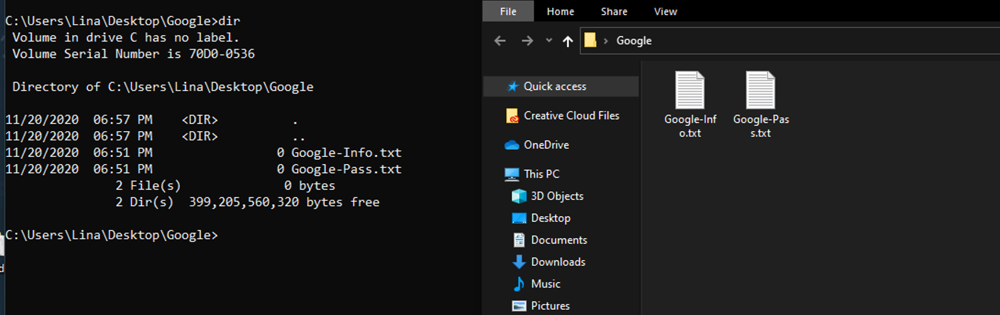
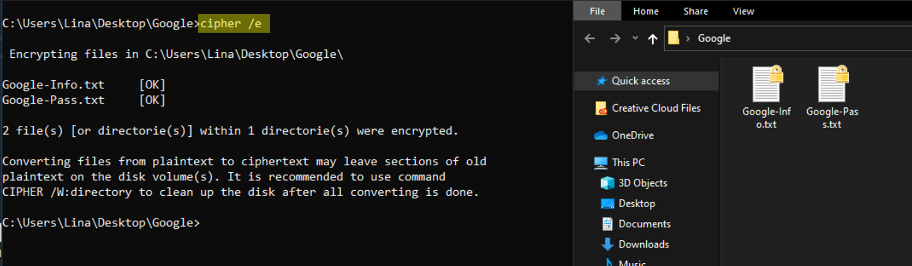

Welcome to my webpage. Here, I will share weekly blogs for my CIT 480 class.
In today's Blog, I will go over how to encrypt a file in Windows using CMD. It is important to know that this method will only work with Windows 10 Pro and not the Home version.
STEP 1: On Windows, open up the folder in which the files that you would like to encrypt are located.
STEP 2: Copy the path of the folder.
STEP 3: Open up CMD.
STEP 4: Using the command "CD" and file path which you copied in step 2, go ahead and navigate to
the file(s) path in CMD. Example "cd c:\Users\lina\Desktop\file-name"
STEP 5: Once in the right location on CMD, go ahead and enter "Cipher /E" and press enter.Your files will now be
encrypted. From now on, users from other accounts will not be able to view these files unless they
enter the correct account password.
Files before Encryption
Files after Encryption
